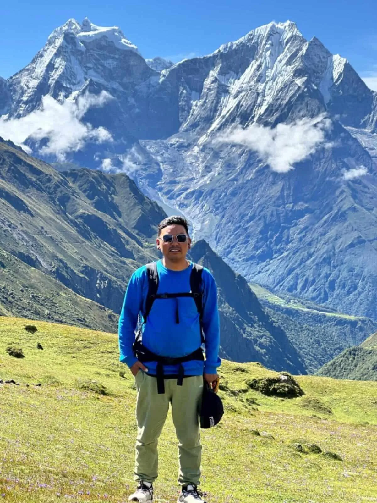

Sonam Dorji Sherpa
Climbing Guide · Born & Raised in Khumbu • Igloo Himalaya Treks Nepal
"I feel at home in Khumbu, and I enjoy helping others get to know the mountains I grew up around."
Sonam Dorji Sherpa is an accomplished high-altitude Climbing Guide at Igloo Himalaya Treks, born and raised in the heart of the Khumbu region, Solukhumbu, Nepal. With over 11 years of hands-on mountain experience in the Nepal Himalayas, Sonam has led more than 80 successful peak climbs on Nepal’s most renowned 6,000-metre and technical summits.
Growing up surrounded by Everest, Ama Dablam, and Lhotse, mountaineering is woven into Sonam’s DNA. Certified as an official Climbing Guide by the Ministry of Tourism, Sonam specializes in leading climbs on 6,000-metre peaks with a calm, composed approach and meticulous, continuous attention to clients’ safety, energy, and comfort.
His summit portfolio includes 30+ summits of Island Peak (6,189m), 20+ summits of Lobuche East (6,119m), 10+ summits of the technical Ama Dablam (6,812m), 10+ ascents of Mera Peak (6,476m), and 10+ ascents of Cholatse (6,440m). Whether fixing ropes across crevasse fields, adjusting crampons before alpine dawn pushes, or calming anxious climbers on steep ridges, Sonam’s quiet confidence gives every client total peace of mind.
Fluent in English, Hindi, and Nepali, Sonam takes immense personal pride in sharing the culture, landscapes, and mountain heritage of his Khumbu home with climbers from around the globe.
I feel at home in Khumbu, and I enjoy helping others get to know the mountains I grew up around. A successful climb isn't just about reaching the summit ridge—it's about staying calm, looking out for each other, and returning safely with memories you'll treasure forever.
— Sonam Dorji Sherpa, Licensed Climbing Guide80+ Completed Peak Climbs Across Khumbu Giants
Imja Tse headwall fixed lines, crevasse ladder crossings, and sunrise summit ascents facing Lhotse.
Technical ridge climbing, crampon work on icy crests, and direct panoramas of Everest and Nuptse.
The Matterhorn of the Himalayas. Mixed granite rock and ice climbing, Camp 1 & Camp 2 knife-edge ridges.
Nepal's highest trekking peak, glacier glacier trekking, and panoramas of five 8,000-metre giants.
Steep southwest ridge climbing, technical ice pitches, and commanding vistas over Gokyo and Khumbu.
Over 11 years of safe, disciplined mountaineering leadership in Nepal’s high Himalayas.
Climbing Specialities & Strengths
Decades of familiarity with Lobuche East, Island Peak, and Mera Peak high camps, crevasses, and summit ridge wind patterns.
Known for an unhurried, reassuring presence that reduces stress on high slopes, ensuring clients climb with focus and confidence.
Born and raised in Solukhumbu, providing authentic cultural connection, teahouse warmth, and local weather intuition.
Favourite Routes & Peak Climbs Led
Click on any route below to view complete climbing itineraries and expedition details:
Verified Certifications & Climbing Safety
What Climbers Say About Sonam Dorji Sherpa
"Climbing Lobuche East with Sonam Dorji was an unforgettable experience. His calm demeanour on the steep summit ridge gave our entire team complete confidence. As a Khumbu native, he knows these mountains intimately and made every step safe and enjoyable."
"Sonam Dorji’s attention to detail is world-class. From checking harness buckles at 2 AM to navigating the steep headwall on Island Peak, he looked after each of us with genuine warmth and patience."
Want Sonam on Your Himalayan Summit Climb?
Request Sonam Dorji Sherpa by name when booking your Lobuche East, Island Peak, or Ama Dablam expedition, subject to guide availability for your dates.